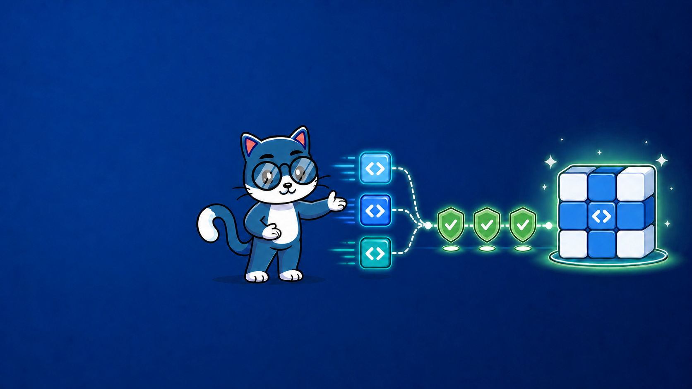
CI/CD
Караваева Кристина
Коротко представиться и обозначить цель: поговорить не только о pipeline, а о постоянной интеграции как о способе совместной работы.
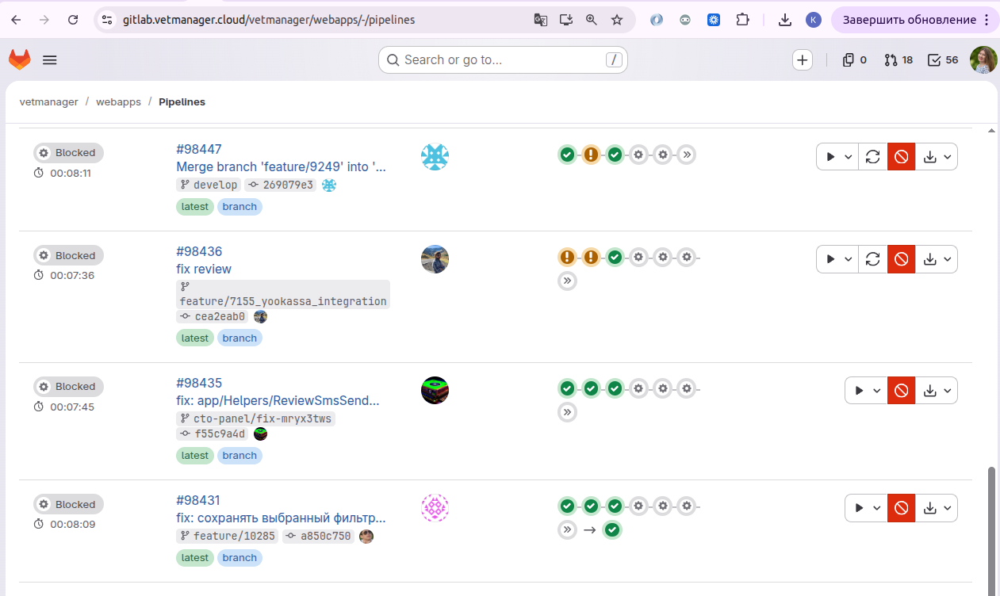
Начать с привычного образа CI в GitLab, а затем отделить интерфейс pipeline от самой инженерной практики.
Путь изменения: от задачи до клиента
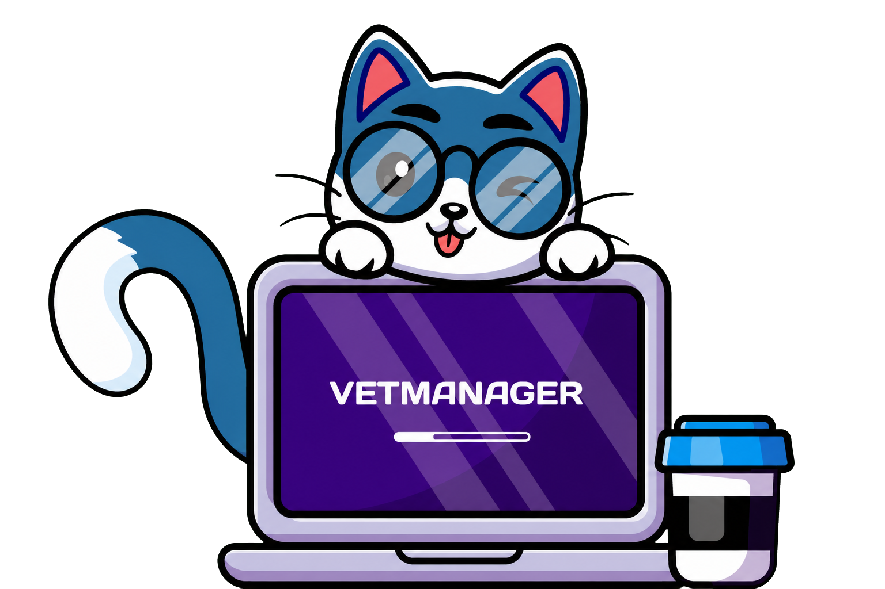
Задача от
DeveloperGit Push
Code
CI
Базовый workflow CI
Build → Tests → Lint → Static Analysis → Ready for deploy
Ценность появляется, когда изменение дошло до клиента
Любое изменение начинается не с кода, а с потребности клиента. Программист написал код, залил изменения — CI автоматически проверил их. Но на этом путь изменения не заканчивается. Дальше начинается CD: подготавливается Release и выполняется Deploy. И только после Deploy результат становится доступен клиенту. Поэтому написанный или даже успешно проверенный код сам по себе ещё не приносит ценности. Ценность появляется, когда изменение действительно дошло до клиента.
Из чего состоит CI/CD
Continuous
Практика частого объединения небольших изменений с общей кодовой базой и их автоматической проверки
Continuous
Система всегда готова к релизу, выкладка в production запускается вручную
Continuous
Каждое успешно проверенное изменение автоматически выкладывается в production
CI — это практика частого объединения небольших изменений и их автоматической проверки. Continuous Delivery означает, что система постоянно готова к выпуску, но production deploy запускает человек. В Continuous Deployment успешно проверенное изменение выкладывается автоматически. Основной акцент первой части доклада — Continuous Integration.
Основные цели CI
1. Быстрая Успешно ли собираются Docker-образы приложения Упали ли тесты Есть ли конфликт зависимостей 2. Меньше Меньше merge-конфликтов Раньше видны несовместимые изменения Интеграция маленькими порциями 3. Автоматизация Code style Security scanning и SAST Coverage Dependency checks
CI нужен не ради зелёного экрана. Он быстрее сообщает о проблемах, уменьшает стоимость интеграции и автоматизирует повторяющиеся проверки.
Практики хорошего CI
Маленькие коммиты
Частые merge
Fast feedback
Green build policy
Первая практика — небольшие изменения. Чем меньше change set, тем проще понять причину проблемы.
Маленькие коммиты
Чем меньше change set, тем легче локализовать проблему
1 Одна понятная цель
2 Безопасно интегрировать или откатить
3 Легко найти причину ошибки
Webapps
90 файлов
4 777 добавлений
1 119 удалений
5 896 изменённых строк
Универсального числа строк нет. Размер определяется свойствами изменения: у него одна понятная цель, его можно безопасно интегрировать или откатить, а причину ошибки легко найти. Справа — реальный пример из Webapps: 90 файлов и 5 896 изменённых строк в одном MR. Тысячи строк и десятки файлов превращают одну задачу в набор связанных рисков.
Практики хорошего CI
Маленькие коммиты
Частые merge
Fast feedback
Green build policy
Следующая практика — не держать feature-ветки неделями.
Частые merge Feature branches не должны жить неделями
Webapps
Первый коммит 30 марта 2026
Время жизни 84 дня
Merge 22 июня 2026
Почти 3 месяца между началом работы и вливанием в develop
На примере показать MR, который жил 84 дня. За это время основная ветка и feature-ветка успевают сильно разойтись: разработчик либо постоянно вливает develop, либо позже долго решает конфликты.
Практики хорошего CI
Маленькие коммиты
Частые merge
Fast feedback
Green build policy
Чем быстрее pipeline, тем быстрее разработчик получает полезный сигнал, пока контекст задачи не потерян.
Fast feedback CI должен быстро возвращать результат: в идеале — менее чем за 10 минут
Слева — параллельное выполнение build, codecheck и четырёх групп тестов. Справа — итог: 1 239 тестов, без ошибок, за 5 минут 4 секунды. Ждём не сумму этапов, а самый длинный путь. Пока контекст задачи не потерян, разработчик уже понимает: можно продолжать или нужно исправлять изменение.
Практики хорошего CI
Маленькие коммиты
Частые merge
Fast feedback
Green build policy
Красный pipeline останавливает дальнейшую интеграцию: сначала возвращаем доверие к основной ветке.
Green build policy Сломанный pipeline нельзя мерджить. Сначала возвращаем сборку в green
Сломанная основная ветка перестаёт быть надёжной точкой интеграции. Исключения допустимы только по заранее определённой процедуре.
Когда изменение действительно закончено?
Ориентир XP (Extreme Programming) : код не остаётся неинтегрированным дольше двух часов
1 Небольшой шаг
→
2 Интеграция
→
3 Все тесты
→
4 Следующий шаг
Естественный ритм разработки
Интеграция — завершение разработки, а не отдельная работа после неё
Кент Бек · «Экстремальное программирование», 2002 · Глава 16, стр. 127–129
У Кента Бека задача не заканчивается в момент, когда разработчик дописал код или открыл merge request.
Каждый небольшой эпизод разработки должен завершиться интеграцией с текущей версией системы и прохождением всех тестов.
Бек приводит очень строгий ориентир: код не должен оставаться неинтегрированным дольше двух часов. Я не предлагаю буквально установить для каждой задачи такой норматив. Эта цифра показывает масштаб идеи: речь идёт о часах, а не о неделях жизни отдельной ветки.
После успешной интеграции разработчик может мысленно закрыть один шаг и перейти к следующему. Бек называет это естественным ритмом разработки.
Если изменение невозможно интегрировать небольшим законченным шагом, возможно, его нужно дополнительно декомпозировать.
Поэтому CI — это не pipeline, который запускается после окончания большой задачи. Это часть определения того, что задача действительно закончена.
Мы получили рабочий ритм CI: небольшое изменение интегрировано, проверено, основная версия снова в green. Теперь посмотрим, что происходит, когда код слишком долго живёт отдельно и интеграцию откладывают.
Основные цели CI
1. Быстрая обратная связь Успешно ли собираются Docker-образы приложения Упали ли тесты Есть ли конфликт зависимостей 2. Меньше integration hell Меньше merge-конфликтов Раньше видны несовместимые изменения Интеграция маленькими порциями 3. Автоматизация качества Code style Security scanning и SAST Coverage Dependency checks
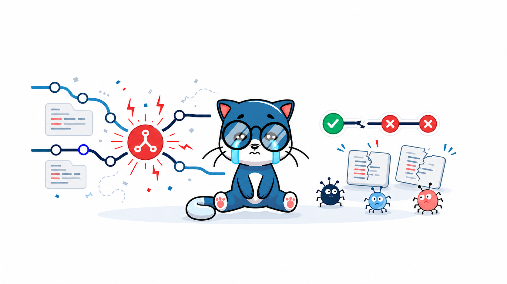
Возвращаемся ко второй цели CI и раскрываем integration hell подробнее.
Integration hell
Болезненное и рискованное объединение изменений, которые слишком долго разрабатывались изолированно
Чем дольше код живёт отдельно, тем дороже его интеграция
Наша цель — не научиться разбирать последствия integration hell, а не допускать его появления.
Как больно,
Короткая эмоциональная пауза перед разбором разных типов конфликтов.
Конфликты — только видимая часть
Текстовые Git не может автоматически объединить изменения одного участка файла
Логические Код успешно объединился, но изменения несовместимы по смыслу
Окружение и данные Конфликтуют миграции, зависимости, конфигурация или внешние сервисы
Код может слиться без merge-конфликта — и всё равно сломаться
Привести примеры сигнатуры метода, API-контракта, миграции, PHP-пакета и переменной окружения.
Как команды работают с конфликтами
Кто последний — тот и прав Последнее сохранение перезаписывает предыдущее
Код на FTP без Git
Риск: потеря изменений
Блокировка Пока один редактирует, остальные ждут
Сообщение о hotfix в чате
Цена: очереди и скрытые простои
Постоянное слияние Небольшие изменения сразу попадают в общую версию
Google Docs и частые merge
Конфликты обнаруживаются рано
Задача CI — сделать конфликты ранними, маленькими и дешёвыми
Google Docs — почти идеальная метафора постоянного слияния: изменения маленькие, сразу объединяются и видны всем. С кодом сложнее: он зависит от базы данных, сервисов, зависимостей и окружения, а успешное текстовое слияние ещё не означает, что система работает. Поэтому к частой интеграции добавляются сборка и автоматические проверки. Дальше — «Багопровод Романичева».
Багопровод Романичева
Каждый уровень проверки фильтрует свой класс ошибок. Но даже после всех фильтров абсолютной гарантии нет.
Интеграции от Макконнелла
Стив Макконнелл · «Совершенный код», 2-е издание, 2010 · Глава 29 — «Интеграция»
Интеграция — объединение отдельных программных компонентов в единую систему
Поэтапная интеграция
Компоненты долго разрабатываются отдельно, а затем впервые объединяются одновременно
Инкрементная интеграция
Компоненты добавляются в работающую систему небольшими порциями и сразу проверяются
Последовательность объединения влияет на то, насколько легко найти причину ошибки
Макконнелл использует термин «интеграция» для операции, при которой отдельные программные компоненты объединяются в единую систему.
Интеграция тесно связана с последовательностью разработки: важно не только написать компоненты, но и решить, когда и в каком порядке соединять их друг с другом.
Здесь важно не запутаться в термине «поэтапная интеграция». В переводе книги так называется подход, при котором компоненты сначала создаются отдельно, а затем соединяются практически одновременно.
Альтернатива — инкрементная интеграция. Работающая система растёт постепенно: добавили компонент, соединили с существующей системой, проверили результат.
Внутри инкрементной интеграции Макконнелл рассматривает шесть стратегий: сверху вниз, снизу вверх, сэндвич, по рискам, по функциональности и T-образную. Нам сейчас важны не детали каждой стратегии, а общий принцип: система растёт и проверяется небольшими шагами.
В большинстве публикаций под непрерывной интеграцией понимается интеграция не реже одного раза в день. В современном процессе желательно делать это ещё чаще — по мере готовности небольших изменений.
Интеграция большого взрыва
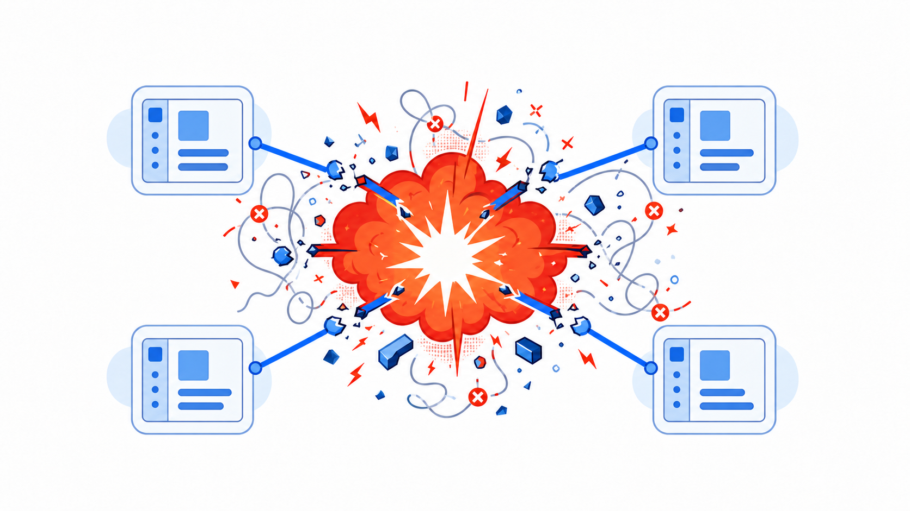
Различные подходы
Слабая инкапсуляция
Глобальные переменные
Плохо документированные
Когда всё соединяется впервые, под подозрением оказываются все компоненты и связи между ними
По мотивам: Стив Макконнелл, «Совершенный код», глава 29, рис. 29-2.
Макконнелл показывает не конкретные технологии, а причины, из-за которых большая интеграция становится непредсказуемой. Это глобальные переменные, слабая инкапсуляция, плохо документированные интерфейсы и разные подходы к обработке ошибок. Каждая из этих проблем отдельно уже усложняет разработку. Но при большом взрыве они впервые проявляются одновременно, поэтому мы не понимаем, где именно искать источник ошибки. Книга описывает общую архитектурную проблему. Теперь посмотрим, в каких частях современной системы эти проблемы могут проявиться.
Большой взрыв в современной системе
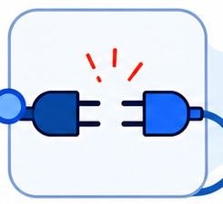
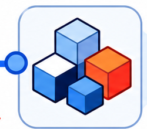
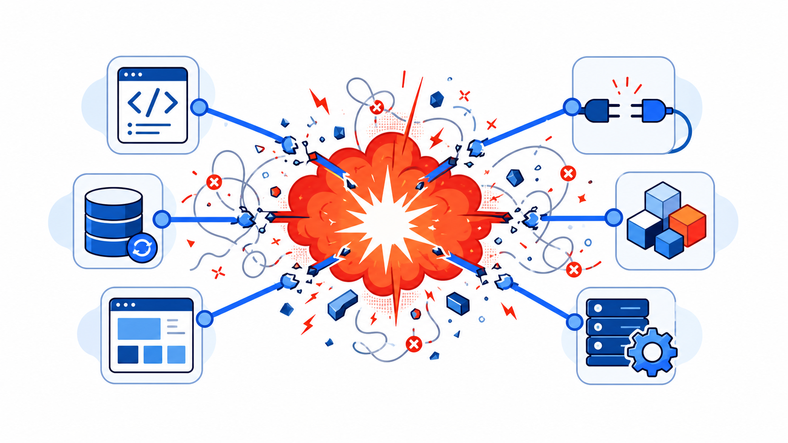
API
Миграции
Frontend
Интеграции
Зависимости
Окружение
Чем больше областей соединяются одновременно, тем труднее определить источник проблемы
Современный пример по мотивам: Стив Макконнелл, «Совершенный код», глава 29, рис. 29-2.
Сегодня система состоит из API, миграций, Frontend, внешних интеграций, зависимостей и окружения. Каждая часть может работать отдельно, но проблемы часто возникают именно при их взаимодействии. Если всё объединяется одним большим шагом, мы получаем сразу много возможных источников ошибки. Неизвестно, находится ли проблема внутри отдельного компонента или появилась на стыке между ними. Альтернатива большому взрыву — не соединять всё одновременно. При инкрементной интеграции система растёт небольшими проверяемыми шагами.
Поэтапная и инкрементная интеграция
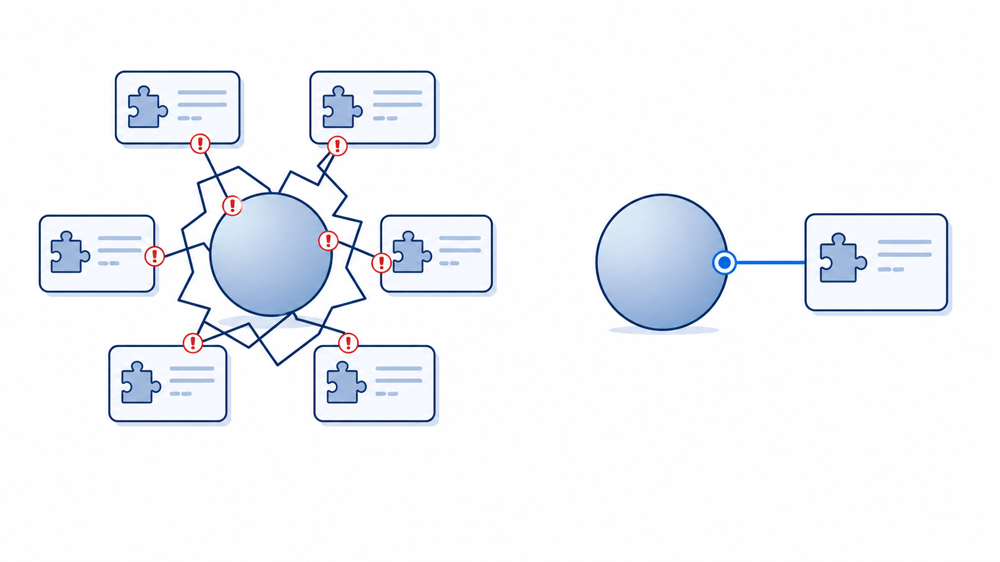
сверху вниз
снизу вверх
сэндвич
по рискам
по функциональности
T-образная
Поэтапная интеграция
Инкрементная интеграция
Всё объединили одновременно — под подозрением вся система
По мотивам: Стив Макконнелл, «Совершенный код», глава 29, рис. 29-4.
При инкрементной интеграции мы не ждём, пока будут готовы все компоненты.
Сначала создаётся небольшая работающая основа. Затем к ней добавляется один компонент или небольшая группа компонентов.
После каждого шага система проверяется.
Если появилась ошибка, круг подозреваемых значительно меньше: вероятнее всего, проблема находится в новом компоненте или в месте его соединения с существующей системой.
Это не означает, что конфликтов и ошибок больше не будет. Они просто обнаруживаются раньше и небольшими порциями.
Инкрементную интеграцию можно выполнять разными способами: двигаться сверху вниз, снизу вверх, одновременно с двух сторон, начинать с наиболее рискованных компонентов или добавлять систему по отдельным функциям.
Для нашего доклада важнее не конкретный порядок, а сам принцип: не накапливать изолированные изменения и не соединять их все одновременно.
Инкрементная интеграция уменьшает размер одного шага. Continuous Integration добавляет к этому частоту и автоматическую проверку каждого шага.
Не складываем все риски в один релиз
Баги полностью исключить нельзя
↓
Меньше изменений за один раз
↓
Меньше проблем одновременно
↓
Проще найти причину и исправить
Выпускаем изменения частями — распределяем риск во времени
Экватор доклада пройден. Ты всё ещё здесь? Моргни два раза
Как бы хорошо мы ни тестировали, некоторые баги дойдут до пользователя. Вопрос — сколько проблем он получит одновременно.
Код написан. Но пользователь его не увидел
Неделями лежит в отдельной ветке
↓
Расходится с основной кодовой базой
↓
Обрастает конфликтами и рисками
</> код готов feature/8903
×
Формально код готов, но ценности ещё не приносит
Код начинает приносить ценность только после интеграции, проверки и доставки пользователю.
Команда выросла — процесс перестал масштабироваться
При прежнем масштабе
Backend и frontend
Мало параллельных изменений
Одного тестового окружения хватало
После роста команды
Больше параллельных задач и MR
Разработка ускорилась
Тестовое окружение Review ещё не готово
Разработка ускорилась, а тестирование стало бутылочным горлышком
Изначально на проекте работали Женя и Сергей: backend и frontend. Backend-разработчик был один, поэтому конфликтов почти не возникало. Изменения можно было вливать по мере готовности, а одного тестового окружения хватало. Процесс не был неправильным — он соответствовал прежнему объёму работы. Затем команда и количество параллельных задач выросли. Разработка ускорилась, задач и merge request стало больше, появилось обязательное ревью. Но тестовое окружение оставалось одно. В результате узким местом стал уже не код, а возможность проверить изменения. Пришлось договариваться, кто и когда занимает стенд, и фактически вводить блокировки.
Один тестовый стенд — два плохих варианта
«Чистый» develop
↓
В test деплоится одна ветка
↓
Блокировки
«Грязный» develop
↓
Протестированные и непротестированные задачи находятся вместе
↓
Сложно отделить готовые изменения для релиза
Выбор: очередь или ненадёжная общая основа
С одним стендом было два варианта. Первый — держать develop чистым и по очереди разворачивать отдельные ветки. Тогда тестируется одна задача, а остальные разработчики ждут. Второй — заранее сливать непротестированные задачи в develop и тестировать их вместе. Но тогда develop становился грязным: непонятно, какая задача уже проверена, что войдёт в релиз и какое изменение сломало общую версию. Review-окружения позже сняли очередь за стенд, но проблему долгой изоляции кода сами по себе не решили.
Релиз 104: накопили общий риск
☠️
4+ месяца без релиза
43 задачи в одном регрессе
529 файлов изменено
132 дня самому старому изменению
Долгий, сложный регресс
Feature flag Код в production Интеграция Эвотор выключена
Feature flag помог выпустить релиз, но не сделал Эвотор готовым
Четыре месяца не было релиза. В итоге в 104-й вошли 43 задачи и 529 изменённых файлов, а самому старому изменению было 132 дня. Регресс прошёл в два этапа: крупные замечания, исправления, повторный регресс и мелкие замечания. Выпустить релиз смогли только потому, что незавершённую интеграцию с Эвотор скрыли feature flag. Код уехал в production, но функция осталась выключенной. Это помогло не держать остальные изменения, но не сделало Эвотор готовым. После такого релиза стало понятно, что продолжать в прежнем режиме нельзя. С апреля ввели фича-стоп: команда сосредоточилась на стабилизации проекта и автоматизации повторяемых проверок.
Фича-стоп: автоматизировали часть регресса
Dusk / Selenium Браузерные пользовательские сценарии
webapps-api-tests Отдельный проект с API-тестами
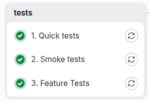
Feature / Unit / Smoke Backend-логика и критичные сценарии
Часть ручного регресса стала повторяемыми автоматическими проверками
С апреля на Webapps был фича-стоп. Команда не просто чинила pipeline, а писала и расширяла тесты. Появились и были расширены Dusk и Selenium-сценарии, создан отдельный проект webapps-api-tests, добавлены Feature-, Unit- и Smoke-тесты. Эта работа не закончилась к одному конкретному релизу. Её масштаб особенно хорошо виден уже в составе 106-го релиза: из 318 изменённых файлов 173 были файлами с тестами. Это не KPI качества, а подтверждение масштаба работы. Часть повторяемых ручных проверок теперь можно выполнять автоматически. Автотесты сделали проверки повторяемыми и снизили нагрузку на ручной регресс. Но они не решили другую проблему — сильную связанность изменений. Это стало особенно заметно в 105-м релизе.
Релиз 105: одна задача скрывала ещё шесть
8 продуктовых задач ожидали
→
1 задача скрывала ещё 6 технически связанных
→
14 задач в релизе получили
Автотесты Начали писать автоматические тесты
Review-окружение Дало несколько параллельных потоков тестирования
Отдельные задачи не стали независимыми изменениями: в релиз они всё равно должны были попасть вместе
Изначально на доске в Bitrix24 к релизу было выделено восемь продуктовых задач. Но перед регрессом выяснилось, что одна из них реализована в одном большом merge request ещё с шестью связанными задачами. Эти задачи нельзя было оставить за пределами регресса: их код уже находился в том же MR. Поэтому QA пришлось дополнительно вручную проверить все связанные задачи, а объём релиза вырос с восьми до четырнадцати задач. Выпускать их тоже пришлось вместе. Review-окружение уже позволило тестировать изменения отдельно от общего test, но не сделало изменения независимо интегрируемыми. Отдельные карточки в Bitrix24 ещё не означают, что код действительно разделён. Теперь разберём, что должны давать продуктовая и программистская декомпозиция.
Декомпозиция: два уровня
Продуктовая декомпозиция Выделяем самостоятельные пользовательские сценарии Каждый шаг даёт проверяемый результат для пользователя Части можно независимо приоритизировать и выпускать в production Программистская декомпозиция Разные задачи — в разных MR Каждый MR — небольшой законченный шаг Рефакторинг старого кода — отдельно Новый код вводится небольшими изменениями Незавершённая функциональность скрывается feature flag
Отдельные карточки в Bitrix24 ещё не означают независимо интегрируемый код
Здесь важно различать два уровня декомпозиции. Продуктовая декомпозиция отвечает на вопрос: какую часть пользовательской ценности можно реализовать и выпустить отдельно? Мы выделяем самостоятельные пользовательские сценарии, каждый шаг должен давать проверяемый результат для пользователя, а части можно независимо приоритизировать и выпускать в production. И эти вопросы должен задавать не только Product Manager. Разработчики тоже должны смотреть на задачу и спрашивать: действительно ли всё это обязательно выпускать одновременно? Но одних отдельных карточек в Bitrix24 недостаточно. Если весь код находится в одном MR, который живёт несколько месяцев, продуктовая декомпозиция не помогает постоянной интеграции. Поэтому нужен второй уровень — программистская декомпозиция. Она отвечает на вопрос: как разделить реализацию на небольшие законченные изменения, которые можно раньше интегрировать в develop? Это в том числе означает разные задачи в разных merge request. Но цель не просто создать больше MR. Каждый MR должен быть небольшим законченным шагом, который можно отдельно отревьюить, интегрировать и проверить. В идеале — ещё и независимо выпустить. Если все MR всё равно приходится сливать одним пакетом, связанность осталась. Сейчас это цель, которую мы только начали внедрять, поэтому в проекте одновременно остаются задачи и со старой, и с новой декомпозицией. Но зачем разработчику прикладывать эти дополнительные усилия, если проще сделать всю задачу и слить её один раз?
Зачем мне эти дополнительные усилия?
Вот здесь обычно и появляется сопротивление. Я взял фичу, сделал её целиком, слил — я молодец. А теперь мне предлагают заранее думать о декомпозиции, сохранять старое поведение, отдельно сливать рефакторинг и постепенно подключать новый код. Возникает логичный вопрос: зачем мне вся эта дополнительная работа?
Задача на месяц — не MR на месяц
Рефакторинг старого кода → Новый код рядом со старым → Расширение функциональности → Включение feature flag
Старое поведение Продолжает работать
Каждый шаг Отдельно попадает в develop
Риски Распределяются между небольшими изменениями
Большая задача может выполняться месяц. Её код не должен месяц жить в одном MR
Для разработчика естественно думать: я взял фичу, месяц её делал, закончил, слил — я молодец.
А при постоянной интеграции появляется дополнительная мыслительная работа. Нужно заранее решить, как разделить изменение, как оставить работающим старое поведение и как постепенно подключать новое.
Кажется, что проще целиком сделать всю задачу и один раз слить её в конце.
Но интеграционная работа от этого не исчезает. Мы просто откладываем её на самый дорогой момент.
К этому времени изменений уже много, MR сложно ревьюить, часть контекста потеряна, а конфликтовать и ломаться может всё сразу.
Поэтому сначала можно отдельно провести необходимый рефакторинг старого кода и слить его.
Затем небольшим шагом добавить новый код рядом со старым. При этом старое поведение продолжает работать.
Следующим шагом расширить функциональность.
Незавершённое поведение при необходимости скрыть feature flag, а включить его тогда, когда функциональность будет готова.
Каждый законченный шаг отдельно попадает в develop, общая система остаётся стабильной, а разработчик переходит к следующей части задачи.
Мы не создаём новые риски и не добавляем интеграционную работу. Мы переносим её с одного большого и рискованного момента на несколько небольших и контролируемых шагов.
Цель не в количестве MR. Цель — как можно раньше сливать в develop безопасные законченные части и не складывать все риски в один большой merge.
Большая задача действительно может выполняться месяц. Но её код не должен весь этот месяц жить отдельно от общей версии.
Мы начали улучшать тестирование, добавили review-окружения, начали вводить новую декомпозицию и стали выпускать релизы чаще. Теперь посмотрим, стал ли код внутри этих релизов действительно свежее.
Релизы стали выходить чаще. А код — свежее?
Релиз 104 105 106 107 108 109 110
Дата 16.04 01.06 15.06 07.07 20.07 03.08 17.08 Интервал между релизами 4+ месяца 46 дней 14 дней 22 дня 13 дней 14 дней 14 дней Возраст самого старого коммита 132 дня 94 дня 24 дня 102 дня 27 дней 47 дней 34 дня
Частые релизы сами по себе не гарантируют частую интеграцию
Цель была выпускать Kwikbi раз в две-три недели, не ставить релиз в один день с Vetmanager и встроить регресс Kwikbi в график QA. По календарю мы приблизились к этому ритму: после четырёх месяцев паузы интервалы составили 46, 14, 22, 13, 14 и 14 дней. Но вторая строка показывает другое: в 107-й релиз, вышедший примерно через три недели, попал коммит возрастом 102 дня. Это не точное время жизни MR, а время от авторской даты самого старого коммита до релиза. В 109-м релизе возраст самого старого коммита составил 47 дней, а в 110-м — 34 дня. Значит, одного релизного календаря недостаточно: нужно, чтобы сам код не жил отдельно месяцами.
Пайплайн завершился успешно
Состояние разработчика проверками не покрыто
Зелёная галочка — не самоцель. Хороший CI должен не только формально завершаться успешно, но и делать работу разработчика спокойнее, а поставку изменений — предсказуемее. Поэтому в завершение соберём практическую пользу CI для разработчика и бизнеса.
Что в итоге даёт постоянная интеграция?
Разработчику
Быстрая обратная связь, пока контекст задачи не потерян
Ошибки обнаруживаются через часы, а не недели
Причину ошибки проще найти и исправить
Меньше конфликтов и болезненных merge
Проще и быстрее code review
CI выявляет слишком сильную связанность архитектуры
Меньше авралов перед релизом
Основная ветка остаётся надёжной основой
Меньше ручных инструкций и «магических» знаний
Спокойнее переключаться на следующую задачу — или уходить в отпуск
CI — не дополнительный контроль, а способ исправлять проблемы, пока они маленькие
Главный получатель пользы CI — разработчик. Бизнес-эффект появляется как следствие устойчивого инженерного процесса.
Благодаря частой интеграции ошибки обнаруживаются через часы, а не недели. Причину проще найти, пока изменение небольшое и контекст задачи ещё не потерян.
Небольшой change set быстрее понять, проверить и безопасно принять, поэтому code review становится проще и быстрее.
CI показывает и архитектурные проблемы: если небольшое изменение невозможно независимо проверить и интегрировать, это может быть сигналом слишком сильной связанности системы.
Автоматические проверки уменьшают количество ручных инструкций и знаний, которые существуют только в голове одного человека. Pipeline не уходит в отпуск и не забывает третий пункт инструкции. Поэтому разработчику спокойнее завершать один шаг, переключаться на следующий — и самому уходить в отпуск.
Задачи не пишутся в стол: небольшой законченный результат быстро соединяется с общей версией, проверяется и продолжает путь к пользователю.
Что в итоге даёт постоянная интеграция?
Бизнесу
Релизы становятся предсказуемее
Ниже риск и стоимость ошибки
Стабильнее продукт
Снижается пиковая нагрузка на QA перед релизом
Быстрее вводить в проект новых разработчиков
Изменения быстрее доходят до пользователей
Быстрее проверяются продуктовые гипотезы
Релиз не зависит от знаний одного конкретного сотрудника
Проще управлять приоритетами
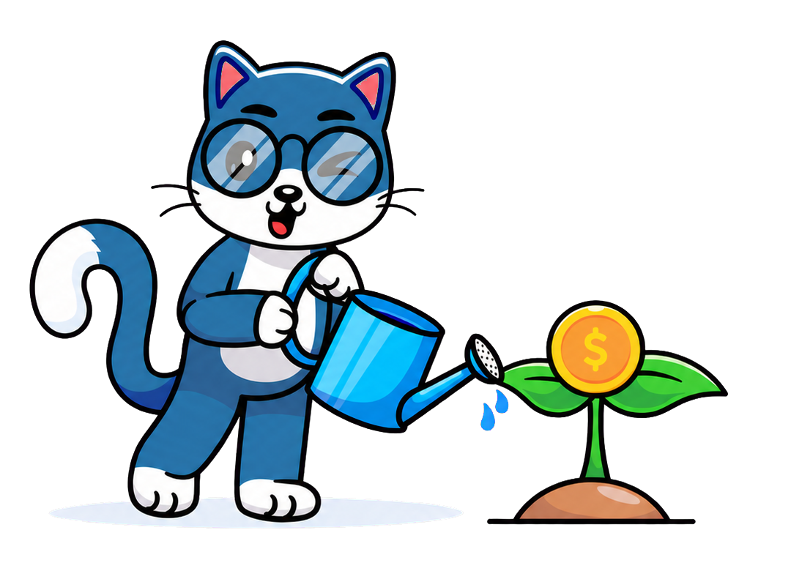
Бизнес-эффект появляется как следствие устойчивого инженерного процесса
Для бизнеса это означает более предсказуемые релизы, меньшую стоимость ошибки и стабильный продукт. Поскольку проблемы обнаруживаются небольшими порциями раньше, перед релизом на QA не обрушивается весь объём рисков одновременно.
Новым разработчикам проще входить в проект: pipeline показывает обязательные проверки и правила процесса на практике.
Небольшое изменение раньше доходит до пользователей и раньше даёт обратную связь, поэтому продуктовые гипотезы проверяются быстрее. Готовые изменения можно выпускать по необходимости, не ожидая одного большого общего релиза.
Воспроизводимый pipeline также снижает зависимость от конкретных сотрудников: релиз не должен становиться невозможным только потому, что нужного человека сегодня нет.
CI — не дополнительный контроль над разработчиком. Это способ обнаруживать и исправлять проблемы, пока они ещё маленькие.
Источники и благодарности
Литература
Стив Макконнелл Глава 29 — «Интеграция»
Кент Бек Глава 16 — «Стратегия разработки»
Отдельное спасибо
CTO — за фича-стоп, который помог команде сосредоточиться на налаживании важных процессов
CVO — за создание «Багопровода»
UI|UX & Graphic designer — за шаблон презентации и котов, которые помогают проще объяснять сложные инженерные процессы
PM — за новый подход к декомпозиции, который мы понемногу внедряем в процесс
Команде Laravel — за активную работу над изменениями процесса, тысячи новых тестов, готовность разбирать сложные места, дробить изменения и постоянно улучшать инженерные практики
Команде QA — за успешно внедренный новый график регрессов и готовность выдержать дополнительную нагрузку
И отдельно — тебе — за внимание и за то, что удалось не уснуть где-то между CI и CD и добраться до этой строчки
Коротко назвать книги, на которые я опиралась, и поблагодарить людей и команды, благодаря которым этот доклад и изменения процесса стали возможны. Отдельно подчеркнуть вклад Laravel в тесты и изменения процесса, а QA — в новый график регрессов и работу с возросшей нагрузкой.
Вопросы?
Спасибо за внимание!
Поблагодарить аудиторию и перейти к вопросам.